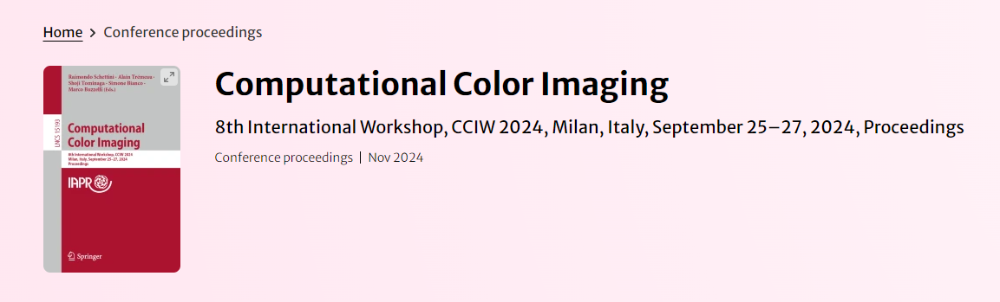
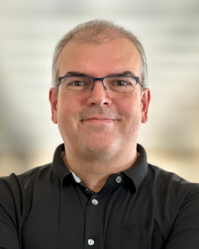
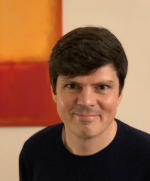
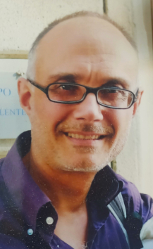
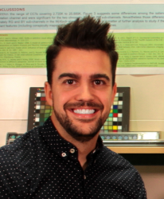
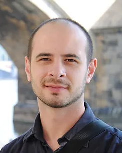

See the full program here
Tutorials
Color Measurements on Paintings: Methodologies and Issues
Advanced digital imaging techniques applied to cultural heritage
Spotlights
Brightening the dark: Advances in Low-Light Image Enhancement and Night Photography Rendering
Personalizing White-Box Image Enhancement: Deep Learning and User-Centric Innovations
Modern Approaches to Explainable Image Aesthetic Assessment
Analysis of automatic white balance datasets and methods
The impact of lightness, color and geometry of illumination in Human Pose Estimation for Performing Arts
Invited speakers
From Gutenberg to Llamas: print optimization through first principles and AI

Bio: Dr. Jan Morovic serves as a Principal Technologist and Senior Color Scientist at HP Inc.'s Large Format Printing Business, based in Barcelona. With two decades of industrial expertise, he specializes in the development and commercialization of cutting-edge technologies, steering technology roadmaps across multiple product lines and business units. Dr. Morovic is a co-inventor of 143 US patents and has co-authored 121 peer-reviewed scientific publications. He is also a recipient of awards from the Royal Photographic Society of Great Britain, the Society for Imaging Science and Technology, and HP Inc.
Atomic color: from points to probability distributions

Bio: Dr Peter Morovic received his Ph.D. in computer science from the University of East Anglia (Norwich, UK) in 2002 and holds a B.Sc. in theoretical computer science from Comenius University (Bratislava, Slovakia). He has been a senior color and imaging scientist at HP Inc. since 2007 and has published 70+ peer-reviewed scientific articles, filed 180 US patents (142 granted). His research interests include image processing, color vision, color pipelines, computational photography, computational geometry and machine learning. His Erdős number is 4.
Marcello Picollo, Institute of Applied Physics "Nello Carrara"
VNIR and SWIR hyperspectral imaging for the study of Picasso paintings

Bio: Dr. Marcello Picollo obtained PhD in Photonics from the University of Eastern Finland, Faculty of Science and Forestry, Joensuu (Finland) and graduated in geology from the University of Florence. He is a senior researcher at the Institute of Applied Physics "Nello Carrara" of the National Research Council of Italy, Florence (Italy). He has been working on spectroscopic investigations of works of art since 1991 and his main research focus is on artists' material characterization using non-invasive spectroscopic and imaging techniques.
Computational Smartphone Image Processing - Research to Product
Bio: Joseph Meehan received the Ph.D. from the National University of Ireland in 1997. He has worked for more than 25 years in multimedia algorithms and architecture research in the US and Europe in the areas of digital communications, video, audio and imaging. He was awarded the IEEE Consumer Electronics Society 2002 Chester Sall Award for the First place Transactions paper award. He architected the first HD video subsystems in a mobile Application Processor in 2007. He has many patents and publications in the multimedia domain. He is currently Multimedia Expert at Huawei leading the algorithm and architecture imaging team in the Nice Research Centre.
Spectral imaging for the study of artworks and historical documents

Bio: Miguel Ángel Martínez-Domingo is Associate Professor in the Department of Optics of the Faculty of Science of University of Granada, Spain. He obtained his PhD. in Physics and Space Science in the branch of Optics in 2017. He also holds an Erasmus Mundus MSc. degree in Color and Spectral Science and two BSc. Degrees: one in Telecommunications Engineering and one in Optics and Optometry. His research expertise has already focused for more than 12 years in the capture, processing and analysis of color and spectral images, combined with other imaging technologies, applied to different fields of science and industry. In the last years his main projects are related to cultural heritage, color vision and food industry.
Advancements in Practical Facial Skin Reflectance Measurement and Realistic Age Transformation

Bio: Giuseppe Claudio Guarnera's research focuses on color, material, and facial appearance acquisition, perception, and rendering. He is a Senior Lecturer (Associate Professor) at the University of York (UK). Alongside this role, he is a Senior Researcher at NTNU (NO) and a Senior Consultant at Lumirithmic (UK), a high-tech spin-out from Imperial College London, where he has contributed to patented state-of-the-art methods for facial appearance capture and lighting reproduction. He received his PhD in computer vision from the University of Catania (IT) in 2013 and enhanced his expertise in color and material appearance through research at the University of Southern California (US), the University of Milan-Bicocca (IT), and Loughborough University (UK). As a guest researcher at the Department of Psychology at Giessen University (DE), he gained significant expertise in material and color perception.
Program
September 25th: Tutorials and spotlights
09:30 Registration
Spotlights
10:00-10:30 "Brightening the dark: Advances in Low-Light Image Enhancement and Night Photography Rendering", Simone Zini
10:30-11:00 "Modern Approaches to Explainable Image Aesthetic Assessment", Luigi Celona
11:00-11:30 "Analysis of automatic white balance datasets and methods", Marco Buzzelli
11:30-12:00 "Personalizing White-Box Image Enhancement: Deep Learning and User-Centric Innovations", Flavio Piccoli
12:00-12:30 "The impact of lightness, color and geometry of illumination in Human Pose Estimation for Performing Arts", Philippe Colantoni
12:30-13:45 Lunch on own
Tutorials
13:45-15:15 "Advanced digital imaging techniques applied to cultural heritage", Miguel Ángel Martínez Domingo
15:15-15:45 Coffee break
15:45-17:15 "Color Measurements on Paintings: Methodologies and Issues", Marcello Picollo
September 26th: Conference day 1
Keynote
09:00-09:50 "Atomic color: from points to probability distributions", Peter Morovic, Ján Morovic
Session 1A
09:50-10:10 "Extended Wien and Planck Loci", Elaheh Daneshvar, Graham Finlayson, Michael H. Brill
10:10-10:30 "Exploiting Milano Retinex Contrast to Enhance Images with Strong Changes of Light Intensity", Michela Lecca
10:30-10:50 "Intrinsic Image Decomposition based on Retinex Theory, Superpixel Segmentation and Scale-Space Computations", Diclehan Ulucan, Oguzhan Ulucan, Marc Ebner
10:50-11:20 Coffee break
Session 1B
11:20-11:40 "Uniform Color Space with Advanced Hue Linearity: PCS23-UCS", Olga Basova, Valentina Bozhkova, Ivan Konovalenko, Anastasia Sarycheva, Mikhail Chobanu, Valerii Timofeev, Dmitry Nikolaev
11:40-12:00 "Color difference in context: an experiment", Lucia Becatti, Beatrice Sarti, Gabriele Simone, Alessandro Rizzi
12:00-12:20 "Dithering with Pascal Cellular Automata", Yvan Richard
12:20-14:10 Lunch on own
Keynotes
14:10-15:00 "Spectral imaging for the study of artworks and historical documents", Miguel Ángel Martínez Domingo
15:00-15:50 "VNIR and SWIR hyperspectral imaging for the study of Picasso paintings", Marcello Picollo, Costanza Cucci, Lorenzo Stefani, Andrea Barucci, Reyes Jiménez-Garnica, Laura Fuster Lopez
15:50-16:20 Coffee break
Session 1C
16:20-16:40 "Stabilization of the spectral power distribution of a tunable multichannel LED lighting system", Sofiane Vernet, Rei Nakayama, Éric Dinet, Alain Trémeau, Philippe Colantoni
16:40-17:00 "Low light hyperspectral imaging using HDR methods", Aiman Raza, Sophie Jost, Dominique Dumortier
17:00-17:20 "Spectral Imaging Methods for Estimating Fluorescence Emission Spectra from Plant Grains and Leaves", Shoji Tominaga, Shogo Nishi, Ryo Ohtera
19:30 Welcome reception at Cloisters of Saint Eustorgio Bistrot (Piazza Sant'Eustorgio 3 - 20123 Milano)
(15 minutes walk from Porta Genova FS metro station, green line)
September 27th: Conference day 2
Keynote
09:00-09:50 "From Gutenberg to Llamas: print optimization through first principles and AI", Ján Morovic, Peter Morovic
Session 2A
09:50-10:10 "Investigation of Image Features for Perceptually Equivalent Gloss Reproduction through Comparison of Real Objects and Images", Midori Tanaka, Hideyuki Ajiki, Takahiko Horiuchi
10:10-10:30 "Stitching from spectral filter array video sequences", Abdelhamid N. Fsian, Jean-Baptiste Thomas, Jon Y. Hardeberg, Pierre Gouton
10:30-11:00 Coffee break
Keynote
11:00-11:50 "Computational Smartphone Image Processing - Research to Product", Joseph Meehan
Session 2B
11:50-12:10 "Classification of lung nodules on CT via pseudo-colour images and deep features from pre-trained convolutional networks", Francesco Bianconi, Mario Luca Fravolini, Elena Caltana, Muhammad Usama Khan, Barbara Palumbo
12:10-12:30 "Painter Verification Using Color Palettes: An Exploratory Study", Simone Bianco, Gianluigi Ciocca, Raimondo Schettini
12:30-14:20 Lunch on own
Keynote
14:20-15:10 "Advancements in Practical Facial Skin Reflectance Measurement and Realistic Age Transformation", Giuseppe Claudio Guarnera
Session 2C
15:10-15:30 "Illuminant Equivariant Networks for Computational Color Constancy", Marco Cotogni, Claudio Cusano
15:30-16:00 "Revisiting Color Constancy Using CNNs: Including Recent Observations", Oguzhan Ulucan, Diclehan Ulucan, Marc Ebner
16:00-16:20 "Enforcing temporal consistency for color constancy in video sequences", Marco Buzzelli, Claudio Rota, Simone Bianco, Raimondo Schettini
16:20-16:50 Coffee break
Session 2D
16:50-17:10 "Instance-based CycleGAN for object segmentation with few annotations", David N. Díaz Estrada, Olivier Robert, Milan Kresovic, Cindy Torres, Damien Muselet, Alain Trémeau
17:10-17:30 "ChromaPose: Robustness of 2D Pose Estimation Under Different Color Illuminations", Jamiu Oluwaseun Ojeleye, Pratik Singh Bisht, Philippe Colantoni, Damien Muselet, Alain Trémeau
17:30-18:00 Closing discussion